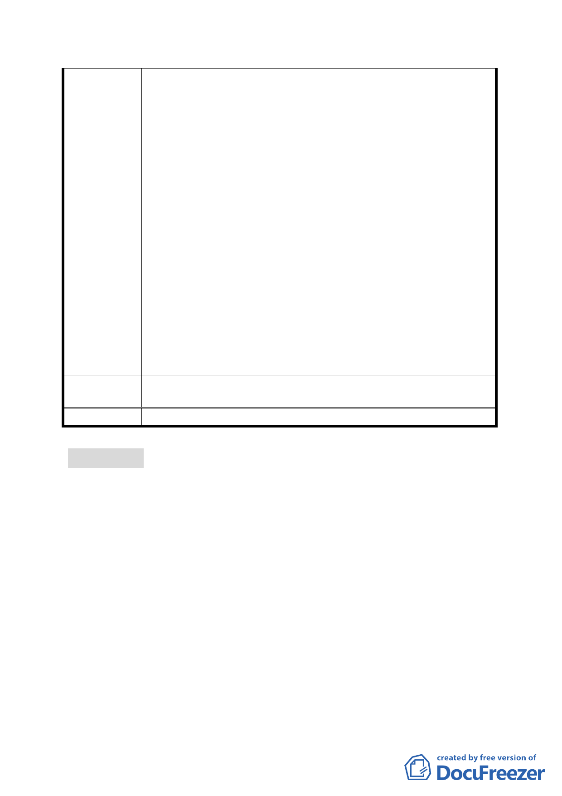

收條例有關保障私人財產之立法意旨。
2.減少工程建設成本：本工程用地係坐落於關渡平原洲美農
業區內，後續開發依法應辦理區段徵收，如採先行切結無
償提供該等土地供本府設置道路開發使用，後續併入關渡
平原整體開發辦理。可撙節鉅額徵收補償費(5 億 8 千 6 百
餘萬元)，減少工程建設成本。
3.不影響既定之工期：公共設施需用土地，業已先行提供使
用，均以不影響施工工期及通車時程為前提。
4.再查本府前於 78 年 6 月 15 日（78）府工新字第 338327
號函通知當時土地所有權人，略以﹕「本府辦理本市第一
期公共設施保留地北投 13 號道路及 138、139 綠地工程，
台端等陳情併入整體關渡平原開發計畫乙案。原土地所有
權人同於 78 年 6 月間即提出申請，在關渡平原開發計畫
未定案前，均具切結書人願無條件無償提供土地予臺北市
政府興建前述工程者，請於文到…前來本府辦理切結手
續…。」，本府據此協議於 80 年 11 月 14 日報請 貴部辦
理撤銷徵收在案，因此該用地已於 78 年間交付本府工務
局新工處作事實上之管理使用，一併說明。
市府回應
說明
本計畫已檢討，無修正意見。
委員會決議 本案依公展計畫書內容通過。
審議事項二
案名：變更臺北市辛亥國、高中用地主要計畫案
案情概要說明：
一、 本案計畫範圍為臺北市文山區，辛亥路4 段以東、萬美街2
段以南、臺北市公務人員訓練中心西界線以東、興德路66 巷
以北所圍之範圍，計畫面積約3.966 公頃。
二、 計畫緣起與目的：
本案基地係於民國58年4月28日公告「修訂本市景美、木
柵兩區主要計畫案」內劃定為學校用地，目前為辛亥國民中
學及高級中學預定地。市府地政處於民國77年間辦理徵收私
有土地及公有土地撥用作業，惟軍方不同意將土地撥用於本
府，歷經多次協商，均無共識，致影響該校地闢建，並因未
-6-